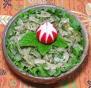

|
Argentine Onion SaladArgentina - Ensalada Cebolla | ||||
| Serves: Effort: Sched: DoAhead: |
4 salad ** 2+ hrs Best |
This salad goes well with roasted meats, as you might suspect, as it's from Argentina. To do the radish flower garnish, you need to soak in ice water 6 hours or overnight, they bloom slowly. | |||
|
1-3/4 ar 1 2/3 ----- 1/4 2 1/2 1/2 1/4 ----- ----- ar ar |
# cl c --- c T t t t --- --- |
Onion, sweet (1) Boiling Water Garlic Parsley -- Dressing Olive Oil, ExtV Wine Vinegar, red Chili powder (2) Salt Pepper -- Serve Over Lettuce leaves -- Garnish Radishes, red Mint leaves |
Make - (2 hrs - 15 min work)
|